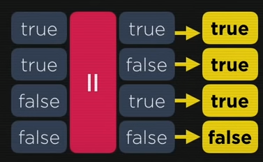

<!--8. Operadores (parte 2)
relacionais
logicos
ternario

-->


  <style>
  body {
    font: normal 20pt Arial;
  }
</style>

<script>
document.write("<strong>Relacionais</strong> <br>");
let maiorQue = 5>2;
document.write(`5 > 2  (maior que) :  <strong> true </strong> <br>`);
let menorQue = 7<4;
document.write(`7 < 4  (menor que) :  <strong> false </strong> <br>`);
let maiorOuIgual = 8>=8;
document.write(`8 >= 8  (maior ou igual) :  <strong> true </strong> <br>`);
let menorOuIgual = 9<=7;
document.write(`9 <= 7  (menor ou igual) :  <strong> false </strong> <br>`);
let igualdade = 5==5;
document.write(`5 == 5  (igualdade) :  <strong> true </strong> <br>`);
let diferente = 4!=4;
document.write(`4 != 4  (diferente) :  <strong> false </strong> <br><br><br>`);

document.write("<strong>Lógicos</strong> <br>");
document.write("<strong> negação &#9758; ! </strong> <br> <strong> conjunção E &#9758; && </strong> <br> <strong> disjunção OU  &#9758; || </strong> <br><br><br>");

document.write("<strong>Conjunção E &&</strong> <br>");
document.write(' <br><br><br>');

document.write("<strong>Disjunção OU ||</strong> <br>");
document.write(' <br><br><br>');


//Exemplos
/*
idade >=15 && idade <=17; // a idade está entre 15 e 17?
estado == 'RJ' || estado =='SP'; // o estado é rj ou SP?
salario >1500 && sexo != 'M'; // o salario é acima de 1500 e nao é homem?
*/


document.write("<strong>Ternário ? :</strong> <br>");
document.write(" teste <strong> ?</strong> true <strong> : </strong> false <br>");
document.write(" media >= 7.0 <strong> ?</strong> APROVADO <strong> : </strong> REPROVADO <br><br><br>");

let media = 5.5
document.write(`let media = 5.5 <br> `);
document.write(`Media > 7 ? Aprovado : Reprovado <br> `);
document.write(media > 7?'APROVADO' : 'REPROVADO');

//media é maior que 7 se for aprovado senao reprovado


</script>